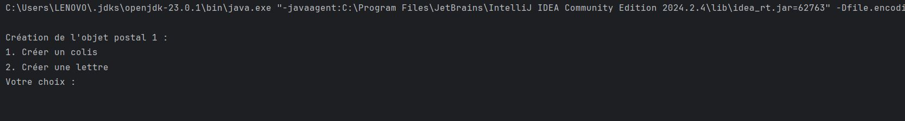
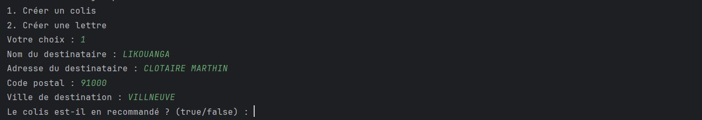
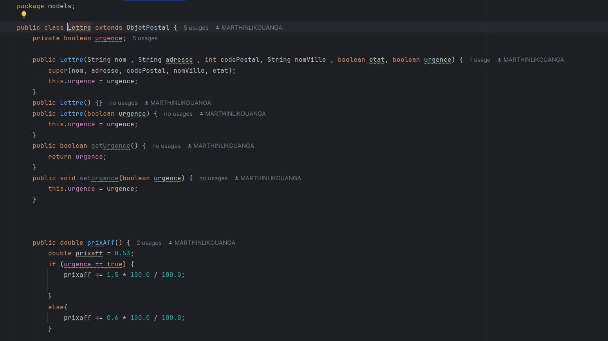

🎯 Contexte du projet
DHL est un gestionnaire de commandes développé en Java, entièrement opérable en ligne de commande (CLI). Réalisé dans un contexte pédagogique, ce projet permet d'explorer les fondamentaux de la programmation orientée objet en Java : structuration du code en modules, gestion des entrées utilisateur, manipulation de données et organisation d'un projet Java avec le système de modules introduit par Java 9. Il simule les fonctionnalités essentielles d'un système de gestion de commandes inspiré de la logistique.
🎓 Objectifs pédagogiques
- Java POO : Appliquer les principes de la programmation orientée objet (classes, héritage, encapsulation)
- Système de modules Java : Structurer le projet avec le système de modules introduit en Java 9 (module-info.java)
- Interface CLI : Concevoir une interaction utilisateur fluide en ligne de commande
- Gestion des données : Créer, lire, modifier et supprimer des commandes (CRUD)
- Gestion des exceptions : Anticiper et traiter les erreurs de saisie et d'exécution
- Architecture logicielle : Organiser le code en packages et modules cohérents
✨ Fonctionnalités principales
1. Gestion des commandes (CRUD)
L'application permet de créer, consulter, modifier et supprimer des commandes directement depuis le terminal. Chaque commande est identifiée par un identifiant unique et contient les informations relatives à la livraison.
2. Interface en ligne de commande
L'utilisateur interagit avec l'application via un menu CLI interactif. Les instructions sont saisies au clavier et les résultats s'affichent directement dans le terminal de manière claire et structurée.
3. Système de modules Java
Le projet est organisé avec le système de modules Java (JPMS), structuré
autour d'un fichier module-info.java qui définit les dépendances
et les exports du module DHL, favorisant la modularité et la maintenabilité du code.
4. Gestion des erreurs
Des mécanismes de gestion des exceptions sont mis en place pour traiter les saisies invalides et les erreurs d'exécution, garantissant une application robuste et stable même en cas d'entrées inattendues.
📸 Captures d'écran

Menu principal CLI

Gestion des commandes

Extrait du code Java
🗄️ Architecture de l'application
Structure du projet :
- module-info.java : Définition du module Java DHL et de ses dépendances
- Main.java : Point d'entrée de l'application et boucle principale du menu CLI
- Commande.java : Classe modèle représentant une commande avec ses attributs
- GestionnaireCommandes.java : Logique métier pour le CRUD des commandes
- Affichage.java : Gestion de l'affichage et des interactions dans le terminal
🛠️ Stack technique

Java
Langage principal du projet, utilisé pour la logique métier, la POO et la gestion du CLI
CLI (Ligne de commande)
Interface utilisateur entièrement opérée depuis le terminal via des entrées clavier
Java Modules (JPMS)
Système de modules Java 9+ pour une architecture modulaire et des dépendances explicites
🚀 Défis relevés
- Structuration d'un projet Java avec le système de modules (JPMS)
- Conception d'une interface CLI claire et ergonomique sans interface graphique
- Implémentation d'un CRUD complet pour la gestion des commandes
- Gestion robuste des exceptions et des saisies utilisateur invalides
- Organisation du code en packages et classes respectant les principes de la POO
- Maintien d'une architecture modulaire et maintenable sur l'ensemble du projet